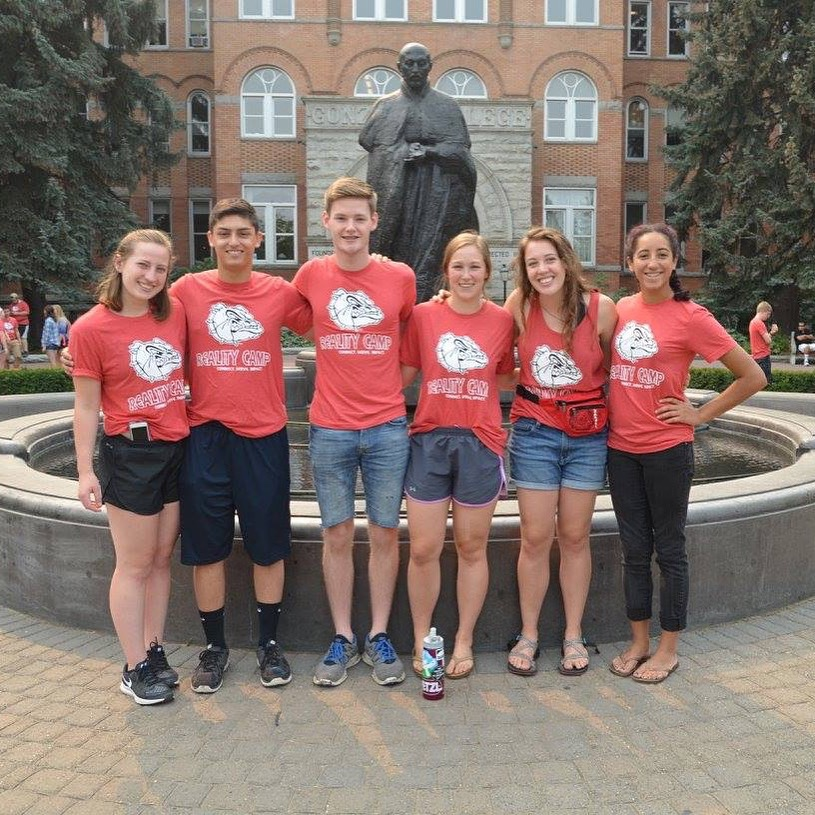
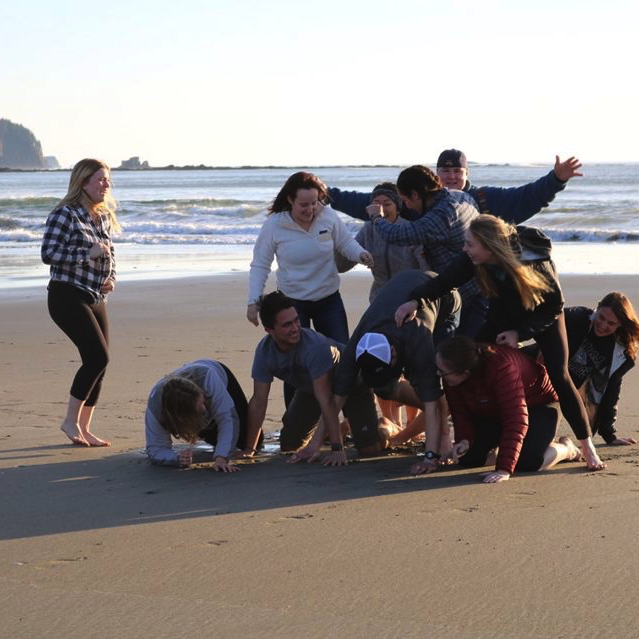

Food cultivates justice
At Gonzaga, I am the president of our Real Food Challenge (RFC) club. This means I am involved with educating students on sustainable food systems and working with our dining services provider, Sodexo, to get more ecologically-sound, local,
fair, and humane food at our campus. This summer, I designed a website for us to communicate about the work we're doing, which you can see here. I'm also
working on developing tools for us to display the data we have on the food in our dining halls.
My passion for food justice started with food a means of communicating culture and celebration, but through RFC it has also become a means toward a more just and fair world. In October 2017, a group of four of us from RFC went to the
AASHE sustainability conference in San Antonio to present on the intersectionality of food justice (in other words, how being intentional about the food we buy and eat can positively affect social and environmental justice) and how
we can empower students to support a environmentally sustainable campus.
Technology communicates values
In my work with Gonzaga's Digital Humanities Initiative (DHI), I've seen first-hand how we can use technology to support access to information. I started working for DHI in January 2016, as the primary web designer putting together
a site to communicate the process and impact of an original musical created by our Theatre and Religious Studies departments. The show was
created to tell the stories of women's voices, so the goal of the website was to further amplify those voices beyond the Spokane community to a wide range of audiences. To the right, is a video of me talking about how the project impacted
me, which is on the WSV site.
This semester with DHI, I am working as a research intern and consultant on a new cultural/historical mapping project with our Spanish department. For this project, I have written up comparisons of different platforms, created guides to be used by students,
and designed part of the final product. I enjoy the continued opportunity to help others use technology to communicate and visualize what is important to them.
Service creates community
My engagement with service began in high school, going on the annual service trip through the Episcopal church I grew up attending. In this spirit, I started my college career by attending a pre-orientation, week-long program centered on community
service opportunities at Gonzaga. From this, I learned about Gonzaga's Mission: Possible, an alternative spring break trip that sends students to sites around the country for a week of service, which I have participated in each year. My
freshman year I got to learn about environmental justice and work with the National Parks System in San Francisco, and my sophomore year I worked with the Tacoma Catholic Workers and with a community farm that employs adults with disabilies.
This year I led a group to Neah Bay, Washington where we worked with the Makah Nation Native Americans. We lived in community with the Makah people, helping at an elementary school, and around the community as needed, and learning about American influence
on their culture and practices, including their right to whaling. I am looking forward to leading again for my fourth and final spring break! I greatly value service work, and it is wonderful to go to a Jesuit university that prioritizes
this. After graduation, I hope to participate in a year of service through either the Jesuit Volunteer Corps, City Year, or the Food Corps.

My "Reality Camp" (pre-orientation service) small group

Mission: Possible San Francisco

Mission: Possible Tacoma

Mission: Possible Neah Bay